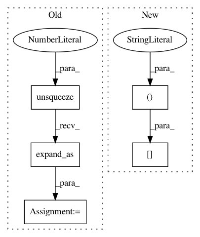

5e148038be5971f2c7c811d46a1d7b28c759ecda,layers/common_layers.py,GravesAttention,forward,#GravesAttention#Any#Any#Any#Any#,144
Before Change
g_t = g_t.unsqueeze(2).expand(g_t.size(0),
g_t.size(1),
inputs.size(1))
sig_t = sig_t.unsqueeze(2).expand_as(g_t)
mu_t_ = mu_t.unsqueeze(2).expand_as(g_t)
j = self.J[:g_t.size(0), :, :inputs.size(1)]
// attention weights
After Change
// discritize attention weights
alpha_t = self.COEF * torch.sum(phi_t, 1)
alpha_t = alpha_t[:, 1:] - alpha_t[:, :-1]
// apply masking
if mask is not None:
In pattern: SUPERPATTERN
Frequency: 3
Non-data size: 5
Instances
Project Name: mozilla/TTS
Commit Name: 5e148038be5971f2c7c811d46a1d7b28c759ecda
Time: 2020-01-09
Author: root@sp-mlc3-5423-0.mlc
File Name: layers/common_layers.py
Class Name: GravesAttention
Method Name: forward
Project Name: rusty1s/pytorch_geometric
Commit Name: 91ca27f08ee7a851ae0db71050defc51ebd57d16
Time: 2019-04-25
Author: matthias.fey@tu-dortmund.de
File Name: torch_geometric/nn/dense/dense_sage_conv.py
Class Name: DenseSAGEConv
Method Name: forward
Project Name: rusty1s/pytorch_geometric
Commit Name: bb2f83a04bfb83acbfb071e17240673843658582
Time: 2019-05-06
Author: matthias.fey@tu-dortmund.de
File Name: torch_geometric/utils/loop.py
Class Name:
Method Name: remove_self_loops